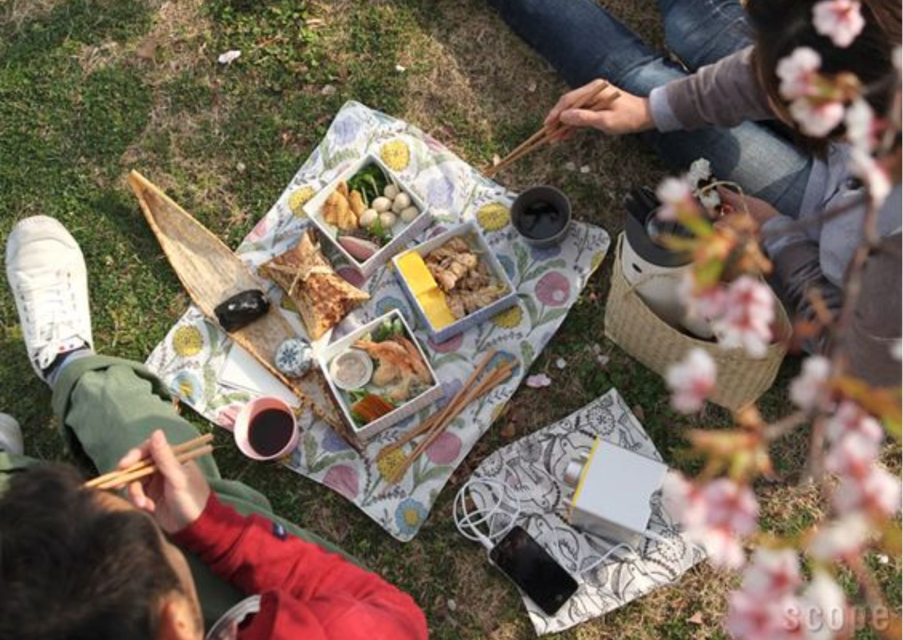
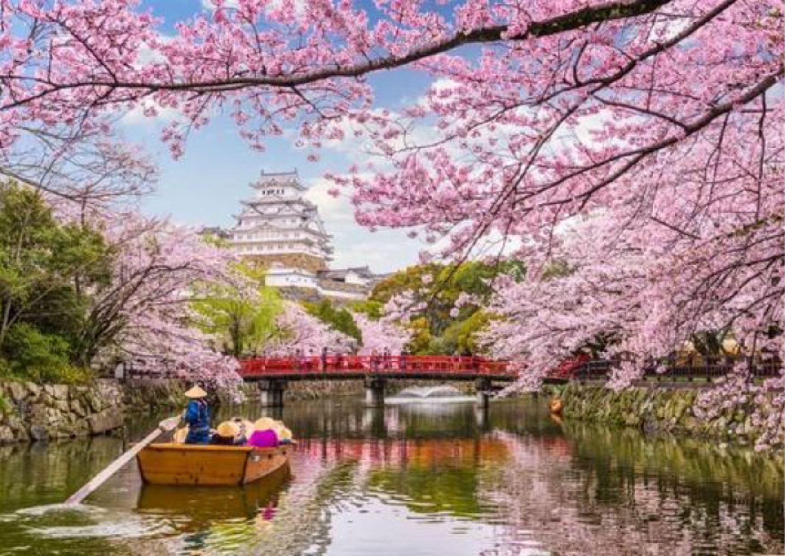

คำว่า ฮานะ (花) แปลว่าดอกไม้ ส่วน มิ (見) แปลว่าดู ฮานามิ จึงแปลตรงตัวว่า เทศกาลชมดอกไม้ แต่โดยทั่วไปแล้ว ฮานามิจะหมายถึงเทศกาลชมซากุระโดยเฉพาะ ในฤดูใบไม้ผลิของญี่ปุ่น ซึ่งตรงกับช่วงเมษายนของทุกปี ชาวญี่ปุ่นจะไปปูเสื่อปิกนิกหรือเดินชมดอกซากุระที่บานสะพรั่งตามที่ต่างๆ
ในช่วงเริ่มแรก ฮานามิคือธรรมเนียมของชนชั้นสูงที่รับเอาการชมดอกบ๊วยมาจากจีนในสมัยนารา ต่อมาเมื่อเข้าสู่สมัยเฮอันจึงเปลี่ยนเป็นดอกซากุระ จากที่เคยเป็นธรรมเนียมของชนชั้นสูงก็เริ่มกระจายมาสู่ชนชั้นอื่นๆ และกลายเป็นที่นิยมในหมู่ชาวบ้านทั่วไปในที่สุด
ปูเสื่อชมดอกไม้ - ชาวญี่ปุ่นมักพกเสื่อพลาสติก เก้าอี้พับ หรือที่นั่งมานั่งชมดอกไม้ใต้ต้นซากุระพร้อมถ่ายรูปเก็บภาพความทรงจำ
ปิกนิกสังสรรค์ - ผู้คนมักนำอาหารและเครื่องดื่มมาปิกนิกพร้อมกับชมดอกซากุระ นอกจากนี้ยังเป็นโอกาสดีในการมาพบปะสังสรรค์กับกลุ่มเพื่อน ครอบครัว หรือที่ทำงาน
เที่ยวเทศกาล - จุดชมซากุระมักมีร้านแผงลอยมาตั้งขายอาหารให้เลือกซื้อกัน ของกินพื้นฐานประจำเทศกาลมีครบ เช่น ยากิโซบะ ทาโกยากิ ริงโกะอาเมะ สายไหม เป็นต้น
ไลท์อัพ - ในช่วงกลางคืน จุดชมซากุระหลายแห่งจะเปิดไฟให้มาชมต่อตอนกลางคืน ร้านแผงลอยก็เปิดยาวถึงช่วงกลางคืนเช่นกัน
วัฒธรรมรับประทานดังโงะในเทศกาลชมดอกไม้ทำให้เกิดเป็นสำนวน Hana yori dango (花より団子) แปลตรงตัวว่า (กิน) ดังโงะดีกว่า (ชม) ดอกไม้ หมายถึงการให้ความสำคัญกับสิ่งที่จับต้องได้มากกว่า
ดังโงะจะนิยมกินระหว่างชมซากุระซึ่งจะมีดังโงะทั้งผมด 3 สี ได้แก่
สีชมพู สื่อถึงซากุระและพระอาทิตย์
สีขาว สื่อถึงหิมะและข้าว
สีเขียว สื่อถึงต้นไม้ใบหญ้า